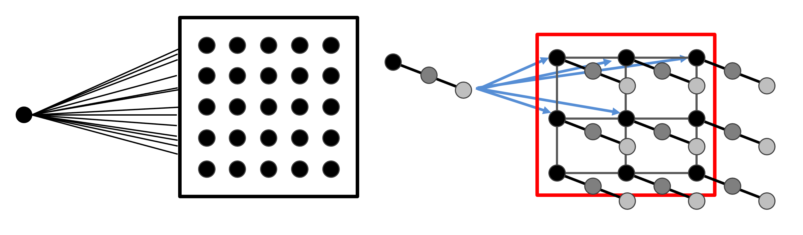
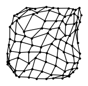

Mapa Auto-Organizativo (SOM) o red de Kohonen¶
41:42 min | Última modificación: Mayo 27, 2021 | [YouTube]
[1]:
import warnings
warnings.filterwarnings("ignore")

Código SOM¶
[2]:
%%writefile som.py
import numpy as np
import matplotlib.pyplot as plt
class SOM:
def __init__(
self,
nrows,
ncols,
ndim,
init_learning_rate=0.5,
max_iter=10,
seed=None,
):
#
# Configuración del modelo
#
self.nrows = nrows
self.ncols = ncols
self.ndim = ndim
self.init_learning_rate = init_learning_rate
self.max_iter = max_iter
#
# Parámetros internos
#
if seed is None:
self.rng = np.random.default_rng()
else:
self.rng = np.random.default_rng(seed)
self.map = self.rng.uniform(size=(self.nrows, self.ncols, self.ndim))
def closest_node(self, x):
#
# Dado un vector de entrada x, computa el nodo más
# cercano del SOM y retorna sus coordenadas
#
dist = np.zeros(shape=(self.nrows, self.ncols))
for i in range(self.nrows):
for j in range(self.ncols):
dist[i, j] = np.sqrt(np.sum((self.map[i, j] - x) ** 2))
return np.unravel_index(dist.argmin(), dist.shape)
def fit(self, X):
# distancia inicial maxima
range_max = self.nrows + self.ncols
for iter in range(self.max_iter):
#
# Constantes para la iteración actual.
#
percentage = 1.0 - float(iter) / self.max_iter
neighbourhood = int(percentage * range_max)
current_rate = percentage * self.init_learning_rate
# for t in rng.choice(len(X), len(X), replace=False):
t = self.rng.integers(low=0, high=len(X))
bmu_row, bmu_col = self.closest_node(X[t, :])
for i in range(self.nrows):
for j in range(self.ncols):
if abs(bmu_row - i) + abs(bmu_col - j) < neighbourhood:
self.map[i, j] += current_rate * (
X[t] - self.map[i, j]
)
def plot_Umatrix(self):
u_matrix = np.zeros((self.nrows, self.ncols), np.float64)
for i in range(self.nrows):
for j in range(self.ncols):
v = self.map[i, j]
sum_dists = 0.0
ct = 0.0
if i - 1 >= 0:
sum_dists += np.sqrt(np.sum((self.map[i - 1, j] - v) ** 2))
ct += 1
if i + 1 <= self.nrows - 1:
sum_dists += np.sqrt(np.sum((self.map[i + 1, j] - v) ** 2))
ct += 1
if j - 1 >= 0:
sum_dists += np.sqrt(np.sum((self.map[i, j - 1] - v) ** 2))
ct += 1
if j + 1 <= self.ncols - 1:
sum_dists += np.sqrt(np.sum((self.map[i, j + 1] - v) ** 2))
ct += 1
u_matrix[i, j] = sum_dists / ct
plt.imshow(u_matrix, cmap="gray")
def dimensionality_reduction(self, X, y):
# self.fit(X)
mapping = np.empty(shape=(self.nrows, self.ncols), dtype=object)
for i in range(self.nrows):
for j in range(self.ncols):
mapping[i, j] = []
for t, label in enumerate(y):
m, n = self.closest_node(X[t, :])
mapping[m, n].append(label)
label_map = np.zeros((self.nrows, self.ncols))
for i in range(self.nrows):
for j in range(self.ncols):
if mapping[i, j] == []:
label_map[i, j] = None
else:
label_map[i, j] = max(set(mapping[i, j]), key=mapping[i, j].count)
plt.imshow(label_map)
def plot_grid(self):
#
fig = plt.figure(figsize=(3, 3))
for i in range(self.nrows):
for j in range(self.ncols):
if i + 1 < self.nrows:
# linea horizontal
x0 = self.map[i, j][0]
y0 = self.map[i, j][1]
x1 = self.map[i + 1, j][0]
y1 = self.map[i + 1, j][1]
plt.plot([x0, x1], [y0, y1], ".-k")
if j + 1 < self.ncols:
# linea vertical
x0 = self.map[i, j][0]
y0 = self.map[i, j][1]
x1 = self.map[i, j + 1][0]
y1 = self.map[i, j + 1][1]
plt.plot([x0, x1], [y0, y1], ".-k")
plt.axis("off")
Overwriting som.py
Representación de puntos de una distribución uniforme¶
[3]:
#
# Se genera una muestra de 1000 puntos que siguen una
# distribución uniforme [0, 1] en el plano (x,y)
#
import numpy as np
NPOINTS = 1000
rng = np.random.default_rng(123456)
sample = rng.uniform(size=(NPOINTS, 2))
sample
[3]:
array([[0.63651375, 0.38481166],
[0.04744542, 0.95525274],
[0.90605094, 0.45696955],
...,
[0.6232829 , 0.425067 ],
[0.80863706, 0.08872339],
[0.93236476, 0.05556339]])
[4]:
#
# Se crea un SOM de 10x10x2. Recuerde que los datos tienen
# dos dimensiones (x,y)
#
from som import SOM
som = SOM(nrows=10, ncols=10, ndim=2, max_iter=700)
som.plot_grid()
som.fit(sample)
som.plot_grid()

